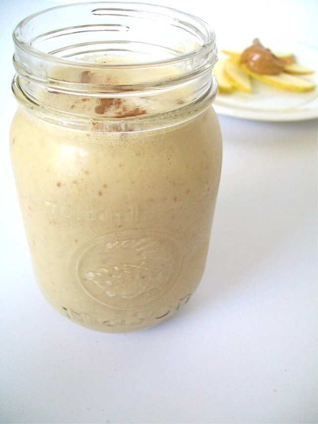

Oatmeal Smoothie

photo by:Cheap&SimpleVegan
A smoothie for those on the go
One of my go-to smoothies that is filling and easy to make is the oatmeal smoothie.
With just a few simple ingredients, you can make this a part of your morning routine, or a mid-day snack for your work day.
Full of flavor and energizing ingredients, there is no way you can't tackle the hardest parts of your day after having one.
Ingredients Needed:
- 1/4 cup old-fashioned oats or quick oats
- 1 banana
- 1/2 cup unsweetened almond milk (or milk of choice)
- 1 tablespoon creamy peanut butter
- 1/2 tablespoon pure maple syrup or honey
- 1/2 teaspoon pure vanilla extract
- 1/2 teaspoon ground cinnamon
- 1/8 teaspoon kosher salt
- Ice (optional)
Steps:
- Place oats in blender and pulse until they are finely ground
- Cut the banana into chunks, then add to blender along with the milk, peanut butter, maple syrup (or honey), vanilla, cinnamon, and salt
- Blend everything together until texture is smooth and creamy (You may need to scrape down the inside of the blender as needed)
- Taste and add sweetener or ice if desired
- Enjoy!
Oatmeal Smoothie recipe by Well Plated